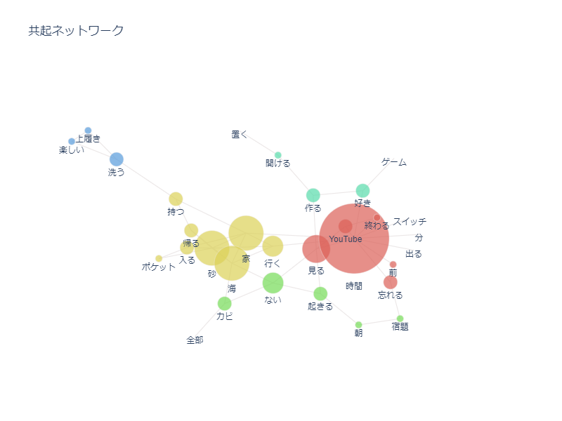

第５回（2024.05.11）
インタビュー本番
・カビ→鞄やダウンなどがすぐにかびてしまう（特に革製品）、気を付けていてもしばらく使っていないとすぐにカビる
⇒空気を循環させたい（クローゼット内とか）
・時間、遊び→SwitchやYouTubeなどに没頭して時間が過ぎてしまう、やるべきことをやらない
⇒時間を区切れるものがほしい、やめることにメリットがあるような仕組み
・上履き→毎週末持って帰ってくる上履きを洗わない、洗ったときには中敷きと本体がばらばらになる（中敷きが無くなる）
⇒上履きを洗うことが楽しくなるようなもの、本体と中敷きをセットにして干せるもの
・風、砂→海に遊びに行くとポケットやズボンの裾をロールアップした部分に砂が入り込む、結果家の中が砂でじゃりじゃりになる
⇒室内に入る前に砂を落としたい
分析
テキストマイニング
